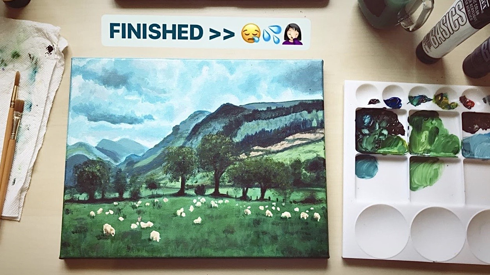
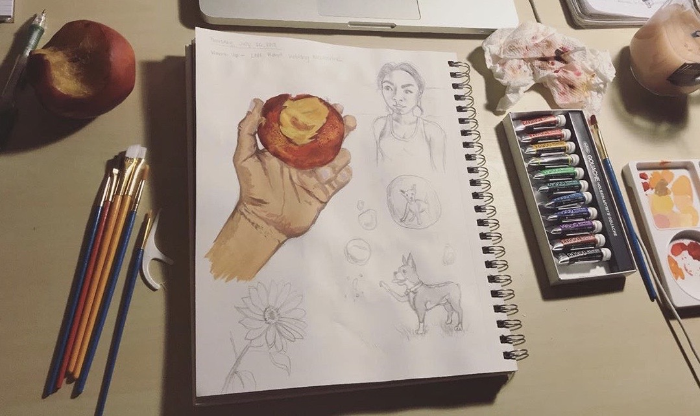
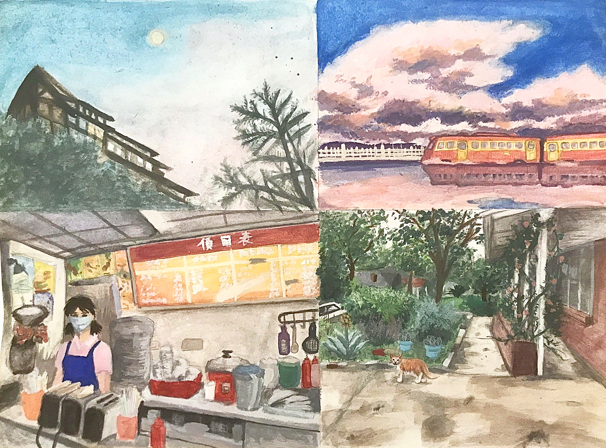

The Artist's Way
In 2016, I had been working in two different healthcare settings, trying to gain as many clinical hours as I could in order to apply to PA school. Here I was, having worked towards this goal of being a healthcare professional for the past 10 years through intensive schooling & work, and I wasn't so certain about if I wanted to become a PA anymore. For the 3 years prior leading up to that point, I felt increasingly empty & depleted working in healthcare. It no longer brought me the same joy & life that I had felt for it during my high school & early college days. I found myself acting, just going thru the motions & emotions of my work- life routine, using time outside of work to go to art shows, see musicians I admired play live concerts, and watch & discuss films with friends. Work became just work and for the first time in 10 years, I became conscious of my creative spirit feeling neglected & deprived. I became desperate to try something new & creative, and began contemplating other career paths.
As stress, anxiety, uncertainty, & unresolved family issues began to negatively impact my mental health, I knew that something had to change. I left my jobs & healthcare path I was on, and took some time off to slow down, seek out therapy to process certain things & take care of my mental health, and reflect upon what I truly wanted in life. Althought it's still something I am processing to this day, I was able to slow down and give myself space & time to think deeply about what brings me joy. I revisited hobbies that I used to LOVE when I was younger-- drawing, art, painting, music, reading, dance -- but gradually fell to the wayside due to parental influences & society favoring STEM-careers. Slowly, I took steps to bring back creative activities into my life heal my creative soul. In 2017, I bought some painting and art supplies to get back into painting, sketching, & creating art for myself and to stretch my creative muscles again. Here are a few of the works that I have completed since getting back into art again:
This was the first painting I painted since starting to get back into painting. It is acrylic paint on 11" x 24" canvas. I used a reference photograph of a grassy valley with grazing sheep and mountains in the background that I had found on Tumblr. Although I originally started in May 2016 at a friend's painting party in College Station, TX (I was visiting for her A&M graduation), I didn't get around to completing it until June 2018.
This was my first time ever using gouache, a water-based medium that is slightly more opaque than watercolor, but definitely not as viscous as acrylics. It is gouache paint on mixed-media paper. I chose to paint my hand holding a half-bitten peach, and it turned out more lovely than I had imagined. A little bit of gouache paint goes a long way, as it is extremely pigmented, but interestingly enough, the more gouache pigment applied to a given area, the more pale it appears after drying. The color of a paint when it's wet versus dry is noticeably different.
This is some gouache painting I completed during the covid-19 quarantine. It's been a great way to destress and get my creative juicies flowing again. I used reference photographs that I had taken myself for each painting except for the painting in the upper-right quandrant. Starting from the top-left quadrant moving counter-clockwise:
- the sky at dusk at a dreamy cloud resort when my mom visited Taiwan in Fall 2017
- a lady serving food a small, breakfast-food eatery across the street from my uncle's home in Taiwan
- the front yard of a house in east austin with a cute garden and friendly orange tabby
- a still from one of my favorite Studio Ghibli movies, "Sprited Away"
The 12-sketch sketchsets above are sketches I had completed for my Ideation class I had with Correa during the Fall 2019 semester. They reminded me of the days of being in my natural science classes, sketching the stages of chick embryo growth for a developmental biology lab or wildflower plant anatomy for AP biology. The 4 sets of 12 sketches we had to complete each had their own theme:
- Set 1- 12 things with legs
- Set 2- 12 things with stems
- Set 3- 12 things with lids, wheels, and/or gears + problems from a list of 100 UX problems to solve (Correa added this part on mid-semester)
- Set 4- 12 things with screens
I plan to continue drawing, painting, and creating in as the years goes on. Although I'm not sure where my career path may end up leading me, I want to keep this creative outlet as a consistent & active part of my life for as long as possible. It would be a dream to be able to start my own business on the side selling prints of my artwork and creating art YouTube videos to share and inspire others to create more art. I strongly believe that we are all creators in our own way, and art is such a therapeutic activity for individuals of all ages and skill levels. Whether you're an an established or emerging artist, let's make art confidently! 👍